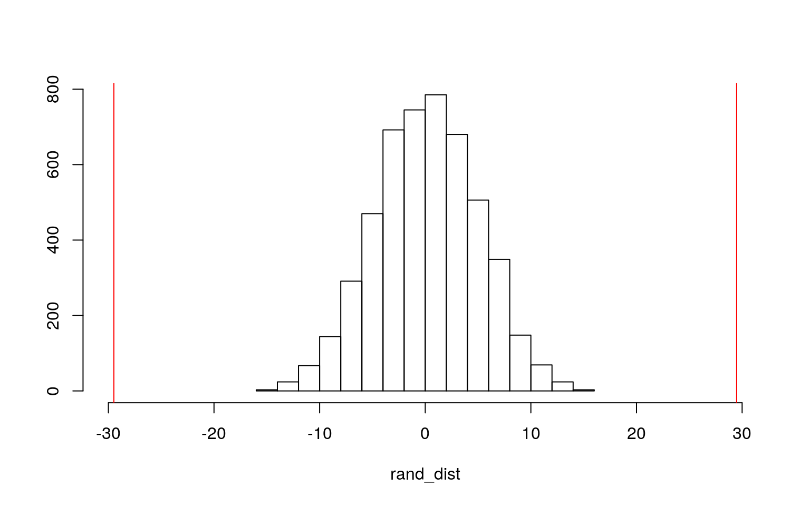

The data set,"Prostate Cancer", consists of 100 observations and 10 variables. Of the ten, nine varibles are numeric and each take on over 10 distinct values. One variable, 'diagnosis_result' is categorical and contains 2 groups, benign and malignant. Eight numeric variables measure the radius, texture, perimeter, area, smoothness, compactness, and symmetry of tumors diagnosed as either benign or malignant for 100 patients identified by ID (numeric variable). The exact units of the numeric variables are unknown.
pcancer <- read.csv("Prostate_Cancer.csv")
dim(pcancer)## [1] 100 10pcancer %>% summarise_all(n_distinct)## id diagnosis_result radius texture perimeter area smoothness compactness
## 1 100 2 16 17 55 95 45 85
## symmetry fractal_dimension
## 1 64 32# (1) MANOVA to test whether 8 numerics differ by diagnosis
# result
pcancerman1 <- manova(cbind(radius, texture, perimeter, area,
smoothness, compactness, symmetry, fractal_dimension) ~ diagnosis_result,
data = pcancer)
summary(pcancerman1) # With a p-value of 5.513e-10, we can reject the null hypothesis and therefore prove that at least one of the 8 DVs differs by diagnosis result.## Df Pillai approx F num Df den Df Pr(>F)
## diagnosis_result 1 0.47038 10.103 8 91 5.513e-10 ***
## Residuals 98
## ---
## Signif. codes: 0 '***' 0.001 '**' 0.01 '*' 0.05 '.' 0.1 ' ' 1# (8) univariate ANOVA tests
summary.aov(pcancerman1) #out of 8 univariate ANOVA tests, only 5 were significant. Perimeter, area, smoothness, compactness, and symmetry differ by diagnosis. ## Response radius :
## Df Sum Sq Mean Sq F value Pr(>F)
## diagnosis_result 1 73.81 73.807 3.1683 0.07818 .
## Residuals 98 2282.94 23.295
## ---
## Signif. codes: 0 '***' 0.001 '**' 0.01 '*' 0.05 '.' 0.1 ' ' 1
##
## Response texture :
## Df Sum Sq Mean Sq F value Pr(>F)
## diagnosis_result 1 13.36 13.358 0.4928 0.4843
## Residuals 98 2656.35 27.106
##
## Response perimeter :
## Df Sum Sq Mean Sq F value Pr(>F)
## diagnosis_result 1 20481 20480.7 57.322 2.061e-11 ***
## Residuals 98 35014 357.3
## ---
## Signif. codes: 0 '***' 0.001 '**' 0.01 '*' 0.05 '.' 0.1 ' ' 1
##
## Response area :
## Df Sum Sq Mean Sq F value Pr(>F)
## diagnosis_result 1 3201167 3201167 45.347 1.131e-09 ***
## Residuals 98 6918123 70593
## ---
## Signif. codes: 0 '***' 0.001 '**' 0.01 '*' 0.05 '.' 0.1 ' ' 1
##
## Response smoothness :
## Df Sum Sq Mean Sq F value Pr(>F)
## diagnosis_result 1 0.0008288 0.00082883 3.9826 0.04875 *
## Residuals 98 0.0203949 0.00020811
## ---
## Signif. codes: 0 '***' 0.001 '**' 0.01 '*' 0.05 '.' 0.1 ' ' 1
##
## Response compactness :
## Df Sum Sq Mean Sq F value Pr(>F)
## diagnosis_result 1 0.097112 0.097112 34.86 5.105e-08 ***
## Residuals 98 0.273003 0.002786
## ---
## Signif. codes: 0 '***' 0.001 '**' 0.01 '*' 0.05 '.' 0.1 ' ' 1
##
## Response symmetry :
## Df Sum Sq Mean Sq F value Pr(>F)
## diagnosis_result 1 0.005095 0.0050948 5.6272 0.01964 *
## Residuals 98 0.088729 0.0009054
## ---
## Signif. codes: 0 '***' 0.001 '**' 0.01 '*' 0.05 '.' 0.1 ' ' 1
##
## Response fractal_dimension :
## Df Sum Sq Mean Sq F value Pr(>F)
## diagnosis_result 1 0.0000004 4.4000e-07 0.0066 0.9356
## Residuals 98 0.0065769 6.7112e-05# (5) t-tests
pairwise.t.test(pcancer$perimeter, pcancer$diagnosis_result,
p.adj = "none")##
## Pairwise comparisons using t tests with pooled SD
##
## data: pcancer$perimeter and pcancer$diagnosis_result
##
## B
## M 2.1e-11
##
## P value adjustment method: nonepairwise.t.test(pcancer$area, pcancer$diagnosis_result, p.adj = "none")##
## Pairwise comparisons using t tests with pooled SD
##
## data: pcancer$area and pcancer$diagnosis_result
##
## B
## M 1.1e-09
##
## P value adjustment method: nonepairwise.t.test(pcancer$compactness, pcancer$diagnosis_result,
p.adj = "none")##
## Pairwise comparisons using t tests with pooled SD
##
## data: pcancer$compactness and pcancer$diagnosis_result
##
## B
## M 5.1e-08
##
## P value adjustment method: nonepairwise.t.test(pcancer$smoothness, pcancer$diagnosis_result,
p.adj = "none")##
## Pairwise comparisons using t tests with pooled SD
##
## data: pcancer$smoothness and pcancer$diagnosis_result
##
## B
## M 0.049
##
## P value adjustment method: nonepairwise.t.test(pcancer$symmetry, pcancer$diagnosis_result, p.adj = "none")##
## Pairwise comparisons using t tests with pooled SD
##
## data: pcancer$symmetry and pcancer$diagnosis_result
##
## B
## M 0.02
##
## P value adjustment method: none# type 1 error rate 1 MANOVA, 8 ANOVA, 5 t-tests = 14 tests
# total P(At least one Type I error) = 1 − P(No Type I
# errors)
1 - 0.95^14## [1] 0.512325# Bonferroni correction
0.05/14## [1] 0.003571429With 1 MANOVA, 8 univariate ANOVAs, and 5 t-tests, 14 tests were performed in total. The overall Type 1 error rate is 0.512. To keep the overall type I error rate at .05, a (boneferroni adjusted) significance level of 0.00357 should be used.
A one-way MANOVA was conducted to determine the effect of diagnosis result (benign or malignant) on eight DVs (radius, texture, perimeter, area, smoothness, compactness, symmetry, and fractal_dimension).Significant differences were found among the two diagnosis results for at least one of the dependent variables (Pillai trace = 0.470, pseudo F (8, 91) = 10.103, p < 0.0001).
Univariate ANOVAs for each DV were conducted as follow-up tests to the MANOVA, using the Bonferroni method for controlling Type I error rates for multiple comparisons.The ANOVAs concluded that three (perimeter, area, and compactness) of the eight DVs were significant and at least one diagnosis result differed (F(1, 98) = 57.322, p < .0001, F(1, 98) = 45.347, p =< .0001, and F(1, 98) = 34.86, p =< .0001, respectively). Before the bonferroni adjustment, at least one diagnosis result differed in five (smoothness, symmetry, perimeter, area, and compactness) of the eight DVs.
Post hoc analysis was performed conducting pairwise comparisons to determine which diagnosis result differed in tumor perimeter, area, and compactness. Both diagnosis results were found to differ significantly from each other in terms of tumor perimeter, area, and compactness after adjusting for multiple comparisons (bonferroni α = .05/14 = .00357).
MANOVA Assumptions
library(rstatix)
group <- pcancer$diagnosis_result
DVs <- pcancer %>% select(radius, texture, perimeter, area, smoothness,
compactness, symmetry, fractal_dimension)
# Test multivariate normality for each group (null:assumption
# met) - violated
sapply(split(DVs, group), mshapiro_test)## B M
## statistic 0.4168014 0.3997918
## p.value 4.01126e-11 1.687565e-14The p-values of each group were p<.05, therefore, the assumption of multivariate normality for each was violated. Further tests of homogeneity of covariance matrices would have been violated as well.
H0: Mean tumor perimeter is the same for malignant vs. benign diagnostic results. Ha: Mean tumor perimeter is different for malignant vs. benign diagnostic results.
# TEST STATISTIC: observed difference in means
pcancer %>% group_by(diagnosis_result) %>% summarize(means = mean(perimeter)) %>%
summarize(mean_diff = diff(means))## # A tibble: 1 x 1
## mean_diff
## <dbl>
## 1 29.5# Permutation test
rand_dist <- vector() #create vector to hold diffs under null hypothesis
for (i in 1:5000) {
new <- data.frame(perimeter = sample(pcancer$perimeter),
diagnosis_result = pcancer$diagnosis_result) #scramble columns
rand_dist[i] <- mean(new[new$diagnosis_result == "M", ]$perimeter) -
mean(new[new$diagnosis_result == "B", ]$perimeter)
} #compute mean difference (base R)
# what proportion of this ditribution lies out side the
# cutoff?
mean(rand_dist > 29.48 | rand_dist < -29.48) #two-tailed p value; under 0.05 so we reject the null hypothesis## [1] 0Interpretation: A mean-difference randomization test was performed between tumor perimeter and the two different diagnosis results, benign and malignant. The test statistic is 29.48, meaning that tumors diagnosed as malignant are 29.48 units bigger in perimeter than benign tumors, on average. With a p-value of 0, I can reject the null hypothesis and conclude that mean tumor perimeter is different for alignant vs. benign diagnostic results.
Plot visualizing the null distribution and test statistic
{
hist(rand_dist, main = "", ylab = "", xlim = c(-30, 30))
abline(v = c(-29.48, 29.48), col = "red")
}
Linear regression model predicting tumor perimeter from at diagnosis result and tumor compactness:
pcancer$compactness_c <- pcancer$compactness - mean(pcancer$compactness,
na.rm = T) #mean-center numeric variable in interaction
fit_pcancer <- lm(perimeter ~ diagnosis_result * compactness_c,
data = pcancer)
summary(fit_pcancer)##
## Call:
## lm(formula = perimeter ~ diagnosis_result * compactness_c, data = pcancer)
##
## Residuals:
## Min 1Q Median 3Q Max
## -43.404 -12.062 0.333 11.964 55.705
##
## Coefficients:
## Estimate Std. Error t value Pr(>|t|)
## (Intercept) 84.573 4.045 20.910 < 2e-16 ***
## diagnosis_resultM 20.947 4.751 4.409 2.71e-05 ***
## compactness_c 152.579 69.995 2.180 0.0317 *
## diagnosis_resultM:compactness_c -51.599 80.513 -0.641 0.5231
## ---
## Signif. codes: 0 '***' 0.001 '**' 0.01 '*' 0.05 '.' 0.1 ' ' 1
##
## Residual standard error: 18.07 on 96 degrees of freedom
## Multiple R-squared: 0.4349, Adjusted R-squared: 0.4173
## F-statistic: 24.63 on 3 and 96 DF, p-value: 6.638e-12Coefficient estimate interpretations: The intercept of 84.573 is the predicted tumor perimeter for a benign tumor whose compactness is average. For those with average tumor compactness, malignant tumors have a predicted perimeter thats is 20.947 greater than benign tumors. For every 1-unit increase in tumor compactness, predicted perimeter goes up 152.579 units for benign tumors. The slope of tumor compactness on perimeter for malignant tumors is 51.599 lower than for benign tumors.
Regression plot with an interaction:
pcancer %>% ggplot(aes(compactness_c, perimeter, color = diagnosis_result)) +
geom_smooth(method = "lm") + geom_vline(xintercept = 0, lty = 2)pcancer %>% ggplot(aes(compactness_c, perimeter, color = diagnosis_result)) +
geom_point() + geom_smooth(method = "lm", se = F)Checking assumptions:
# test linearity
resids <- fit_pcancer$residuals
fitvals <- fit_pcancer$fitted.values
ggplot() + geom_point(aes(fitvals, resids)) + geom_hline(yintercept = 0,
color = "red") + ggtitle("Residuals vs Fitted plot")# test normality
shapiro.test(resids) #Ho: true distribution is normal - met##
## Shapiro-Wilk normality test
##
## data: resids
## W = 0.98669, p-value = 0.4168# test homoskedacity
bptest(fit_pcancer) #H0: homoskedastic - violated##
## studentized Breusch-Pagan test
##
## data: fit_pcancer
## BP = 10.838, df = 3, p-value = 0.01264# Normal-theory (uncorrected) SEs
summary(fit_pcancer)##
## Call:
## lm(formula = perimeter ~ diagnosis_result * compactness_c, data = pcancer)
##
## Residuals:
## Min 1Q Median 3Q Max
## -43.404 -12.062 0.333 11.964 55.705
##
## Coefficients:
## Estimate Std. Error t value Pr(>|t|)
## (Intercept) 84.573 4.045 20.910 < 2e-16 ***
## diagnosis_resultM 20.947 4.751 4.409 2.71e-05 ***
## compactness_c 152.579 69.995 2.180 0.0317 *
## diagnosis_resultM:compactness_c -51.599 80.513 -0.641 0.5231
## ---
## Signif. codes: 0 '***' 0.001 '**' 0.01 '*' 0.05 '.' 0.1 ' ' 1
##
## Residual standard error: 18.07 on 96 degrees of freedom
## Multiple R-squared: 0.4349, Adjusted R-squared: 0.4173
## F-statistic: 24.63 on 3 and 96 DF, p-value: 6.638e-12# Robust (corrected) SEs
coeftest(fit_pcancer, vcov = vcovHC(fit_pcancer)) #regression after adjusting standard errors for violation##
## t test of coefficients:
##
## Estimate Std. Error t value Pr(>|t|)
## (Intercept) 84.5735 6.8782 12.2959 < 2.2e-16 ***
## diagnosis_resultM 20.9468 7.2402 2.8931 0.004719 **
## compactness_c 152.5792 127.3441 1.1982 0.233803
## diagnosis_resultM:compactness_c -51.5994 140.5051 -0.3672 0.714247
## ---
## Signif. codes: 0 '***' 0.001 '**' 0.01 '*' 0.05 '.' 0.1 ' ' 1The linearity assumption was checked by inspecting the Residuals vs Fitted plot. Normality was checked using the Shapiro-Wilk test and homoskedacity was checked using the BP test. The linearity assumption seems to have been met, along with normality. The homoskedacity assumption was violated.
The corrected standard errors were larger than the normal-theory standard errors. Under robust SEs, the model's estimates for intercept and 'diadnosis_resultM' remained significant, while the estimate for 'compactness_c' lost its significance (relative to the original model).
R^2:
fit_pcancer <- lm(perimeter ~ diagnosis_result * compactness_c,
data = pcancer)
summary(fit_pcancer)##
## Call:
## lm(formula = perimeter ~ diagnosis_result * compactness_c, data = pcancer)
##
## Residuals:
## Min 1Q Median 3Q Max
## -43.404 -12.062 0.333 11.964 55.705
##
## Coefficients:
## Estimate Std. Error t value Pr(>|t|)
## (Intercept) 84.573 4.045 20.910 < 2e-16 ***
## diagnosis_resultM 20.947 4.751 4.409 2.71e-05 ***
## compactness_c 152.579 69.995 2.180 0.0317 *
## diagnosis_resultM:compactness_c -51.599 80.513 -0.641 0.5231
## ---
## Signif. codes: 0 '***' 0.001 '**' 0.01 '*' 0.05 '.' 0.1 ' ' 1
##
## Residual standard error: 18.07 on 96 degrees of freedom
## Multiple R-squared: 0.4349, Adjusted R-squared: 0.4173
## F-statistic: 24.63 on 3 and 96 DF, p-value: 6.638e-12According to the model's multiple R-squared value, 43.49% of variability in tumor perimeter is explained by the model. However, according to its adjusted R-squared value, 41.73% of variability in tumor perimeter is explained by the model.
# sample rows from dataset with replacement
boot_dat <- sample_frac(pcancer, replace = T)
# repeat 5000 times
samp_distn <- replicate(5000, {
boot_dat <- sample_frac(pcancer, replace = T) #take bootstrap sample of rows
fit <- lm(perimeter ~ diagnosis_result * compactness_c, data = boot_dat) #fit model on bootstrap sample
coef(fit) #save coefs
})
## Bootstrapped SEs (resampling rows)
samp_distn %>% t %>% as.data.frame %>% summarize_all(sd)## (Intercept) diagnosis_resultM compactness_c diagnosis_resultM:compactness_c
## 1 5.118939 5.565349 90.86997 106.4284# Normal-theory (uncorrected) SEs
summary(fit_pcancer)$coef[, 1:2]## Estimate Std. Error
## (Intercept) 84.57345 4.044587
## diagnosis_resultM 20.94684 4.750739
## compactness_c 152.57918 69.994555
## diagnosis_resultM:compactness_c -51.59941 80.513256# Robust (corrected) SEs
coeftest(fit_pcancer, vcov = vcovHC(fit_pcancer))[, 1:2]## Estimate Std. Error
## (Intercept) 84.57345 6.878183
## diagnosis_resultM 20.94684 7.240150
## compactness_c 152.57918 127.344072
## diagnosis_resultM:compactness_c -51.59941 140.505119The bootstrapped SEs were larger than the normal-theory SEs but smaller than the robust SEs, meaning it's p-values followed the same pattern. As previously stated, under robust SEs, the model's estimates for intercept and 'diadnosis_resultM' remained significant, while the estimate for 'compactness_c' lost significance (relative to the original model).
Logistic regression:
pcancerdata <- pcancer %>% mutate(y = ifelse(diagnosis_result ==
"M", 1, 0))
myfit1 <- glm(y ~ perimeter + area, data = pcancerdata, family = binomial(link = "logit"))
coeftest(myfit1) #coefficients are on logit scale##
## z test of coefficients:
##
## Estimate Std. Error z value Pr(>|z|)
## (Intercept) -26.3570881 7.0041995 -3.7630 0.0001679 ***
## perimeter 0.4758750 0.1370018 3.4735 0.0005137 ***
## area -0.0268287 0.0090215 -2.9739 0.0029408 **
## ---
## Signif. codes: 0 '***' 0.001 '**' 0.01 '*' 0.05 '.' 0.1 ' ' 1exp(coef(myfit1)) #exponentiate to get odds scale## (Intercept) perimeter area
## 3.574885e-12 1.609422e+00 9.735280e-01Coefficient interpretations: Intercept: odds of malignancy for perimeter=0, area=0 is 3.575e-12. For every one-unit increase in perimeter, the odds of malignancy are multiplied by 1.609. For every one-unit increase in area, the odds of malignancy are multiplied by 9.735e-01.
Class Diagnostics & Confusion Matrix:
# predicted probabilities
prob <- predict(myfit1, data = "response")
class_diag(prob, pcancerdata$diagnosis_result)## acc sens spec ppv f1 auc
## M 0.84 0.8548387 0.8157895 0.8833333 0.8688525 0.9170204# confusion matrix
pred <- ifelse(prob > 0.5, 1, 0)
table(truth = pcancerdata$diagnosis_result, predict = pred) %>%
addmargins## predict
## truth 0 1 Sum
## B 31 7 38
## M 9 53 62
## Sum 40 60 100(31 + 53)/100 #Accuracy## [1] 0.8453/62 #Sensitivity (TPR)## [1] 0.854838731/38 #Specificity (TNR)## [1] 0.8157895Classification Diagnostics: The accuracy, sensitivity, specificity, and ppv are 0.84, 0.85, 0.82, 0.88, respectively.The AUC is 0.917, which is classified as great. The confusion matrix was also used to calculate the accuracy, sensitivity, and specificity of the model. The claculated values matched those from the 'class_diag' function.
Density Plot:
# Density Plot
pcancerdata$logit <- predict(myfit1, type = "link") #get predicted logit scores (logodds)
pcancerdata %>% mutate(diagnosis_result = factor(diagnosis_result,
levels = c("M", "B"))) %>% ggplot() + geom_density(aes(logit,
color = diagnosis_result, fill = diagnosis_result), alpha = 0.4) +
theme(legend.position = c(0.85, 0.85)) + geom_vline(xintercept = 0) +
xlab("predictor (logit)") #plot logit scores for each truth categoryROC Curve & AUC:
# ROC Curve
library(plotROC) #install.packages(plotROC)
# geom_roc needs true outcome (d, should be 0/1) and
# predicted probability/logit (m, or just predictor if just
# one):
myROCplot1 <- ggplot(pcancerdata) + geom_roc(aes(d = y, m = prob),
n.cuts = 0)
myROCplot1# compute the AUC
calc_auc(myROCplot1)## PANEL group AUC
## 1 1 -1 0.9170204The AUC for this model can be classified as great, with a value of 0.917.
Logistic Regression: In-sample
myfit2 <- glm(y ~ radius + texture + perimeter + area + smoothness +
compactness + symmetry + fractal_dimension, data = pcancerdata,
family = binomial(link = "logit"))
coeftest(myfit2) #coefficients are on logit scale##
## z test of coefficients:
##
## Estimate Std. Error z value Pr(>|z|)
## (Intercept) 8.7834e-01 1.4700e+01 0.0598 0.95235
## radius -2.0060e-02 6.9691e-02 -0.2878 0.77347
## texture 7.9146e-02 6.9698e-02 1.1356 0.25614
## perimeter 9.4814e-02 2.0567e-01 0.4610 0.64480
## area -3.4675e-03 1.3239e-02 -0.2619 0.79338
## smoothness -2.0140e+01 2.9155e+01 -0.6908 0.48970
## compactness 4.6217e+01 2.3240e+01 1.9887 0.04674 *
## symmetry -4.7384e+00 1.9110e+01 -0.2480 0.80417
## fractal_dimension -1.6146e+02 1.2711e+02 -1.2703 0.20399
## ---
## Signif. codes: 0 '***' 0.001 '**' 0.01 '*' 0.05 '.' 0.1 ' ' 1exp(coef(myfit2)) #exponentiate to get odds scale## (Intercept) radius texture perimeter
## 2.406892e+00 9.801400e-01 1.082363e+00 1.099454e+00
## area smoothness compactness symmetry
## 9.965385e-01 1.792470e-09 1.180041e+20 8.752803e-03
## fractal_dimension
## 7.568133e-71# predicted probabilities
prob2 <- predict(myfit2, data = "response")
# in-sample classification diagnostics
class_diag(prob2, pcancerdata$diagnosis_result)## acc sens spec ppv f1 auc
## M 0.87 0.8709677 0.8684211 0.9152542 0.892562 0.9291171The accuracy, sensitivity, and specificity are all about 0.87, while the precision is about 0.92.The AUC is 0.929, which is classified as great.
10-fold CV
set.seed(1234)
k = 10
data <- pcancerdata %>% sample_frac #put rows of dataset in random order
folds <- ntile(1:nrow(data), n = 10) #create fold labels
diags <- NULL
for (i in 1:k) {
train <- data[folds != i, ] #create training set (all but fold i)
test <- data[folds == i, ] #create test set (just fold i)
truth <- test$y #save truth labels from fold i
fit3 <- glm(y ~ radius + texture + perimeter + area + smoothness +
compactness + symmetry + fractal_dimension, data = train,
family = "binomial")
probs <- predict(fit3, newdata = test, type = "response")
diags <- rbind(diags, class_diag(probs, truth))
}
summarize_all(diags, mean)## acc sens spec ppv f1 auc
## 1 0.83 0.8728571 0.7716667 0.8621429 0.8564635 0.8862143The average accuracy, sensitivity, specificity, and precision were calculated to be about 0.83, 0.87, 0.77, and 0.86, respectively, for the 10-fold CV model. The out-of sample AUC (0.88) showed a decrease from the in-sample AUC (0.929), meaning that the original model shows signs of overfitting. The out-of-sample AUC is considered to be good.
LASSO
# install.packages('glmnet')
library(glmnet)
set.seed(1234)
# your code here
y <- as.matrix(pcancerdata$diagnosis_result) #grab response
pcancerdata_preds <- model.matrix(diagnosis_result ~ radius +
texture + perimeter + area + smoothness + compactness + symmetry +
fractal_dimension, data = pcancerdata)[, -1] #predictors (drop intercept)
head(pcancerdata_preds) #predictors in matrix form## radius texture perimeter area smoothness compactness symmetry
## 1 23 12 151 954 0.143 0.278 0.242
## 2 9 13 133 1326 0.143 0.079 0.181
## 3 21 27 130 1203 0.125 0.160 0.207
## 4 14 16 78 386 0.070 0.284 0.260
## 5 9 19 135 1297 0.141 0.133 0.181
## 6 25 25 83 477 0.128 0.170 0.209
## fractal_dimension
## 1 0.079
## 2 0.057
## 3 0.060
## 4 0.097
## 5 0.059
## 6 0.076pcancerdata_preds <- scale(pcancerdata_preds) #scale
# 1st step of LASSO (family='binomial' bc logistic
# regression)
cv <- cv.glmnet(pcancerdata_preds, y, family = "binomial") #picks an optimal value for lambda through 10-fold CV
# make a plot of the coefficients for different values of
# lambda (line for each predictor variable)
{
plot(cv$glmnet.fit, "lambda", label = TRUE)
abline(v = log(cv$lambda.1se))
abline(v = log(cv$lambda.min), lty = 2)
} #choose the lamdba thats = to the solid line cv <- cv.glmnet(pcancerdata_preds, y, family = "binomial")
lasso_fit <- glmnet(pcancerdata_preds, y, family = "binomial",
lambda = cv$lambda.1se)
coef(lasso_fit)## 9 x 1 sparse Matrix of class "dgCMatrix"
## s0
## (Intercept) 0.6510572
## radius .
## texture .
## perimeter 0.8952084
## area .
## smoothness .
## compactness 0.4076108
## symmetry .
## fractal_dimension .# classification diagnostics
lasso_prob <- predict(lasso_fit, pcancerdata_preds, type = "response")
class_diag(lasso_prob, pcancerdata$diagnosis_result)## acc sens spec ppv f1 auc
## M 0.9 0.9677419 0.7894737 0.8823529 0.9230769 0.9210526Non-zero coefficient estimates include perimeter and compactness. These varibales are retained.
10-fold CV using LASSO-selected variables
set.seed(1234)
k = 10
data <- pcancerdata %>% sample_frac #put rows of dataset in random order
folds <- ntile(1:nrow(data), n = 10) #create fold labels
diags <- NULL
for (i in 1:k) {
train <- data[folds != i, ] #create training set (all but fold i)
test <- data[folds == i, ] #create test set (just fold i)
truth <- test$y #save truth labels from fold i
fit4 <- glm(y ~ perimeter + compactness, data = train, family = "binomial")
probs <- predict(fit4, newdata = test, type = "response")
diags <- rbind(diags, class_diag(probs, truth))
}
summarize_all(diags, mean)## acc sens spec ppv f1 auc
## 1 0.84 0.8779762 0.8016667 0.8738095 0.8674159 0.9082381The out-of sample AUC (0.88) showed a decrease from the in-sample AUC (0.929), meaning that the orignal model (included all 8 explanatory variables) showed signs of overfitting. The AUC of the model using only LASSO-selected variables, 0.908, shows a much smaller decrease from the original in-sample AUC and is considered great.